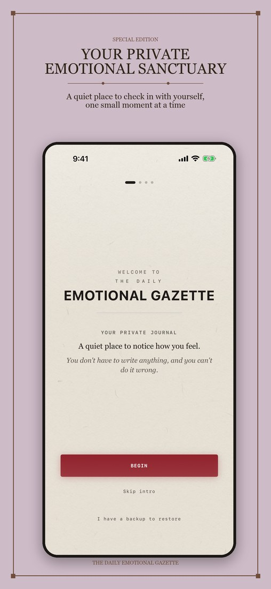
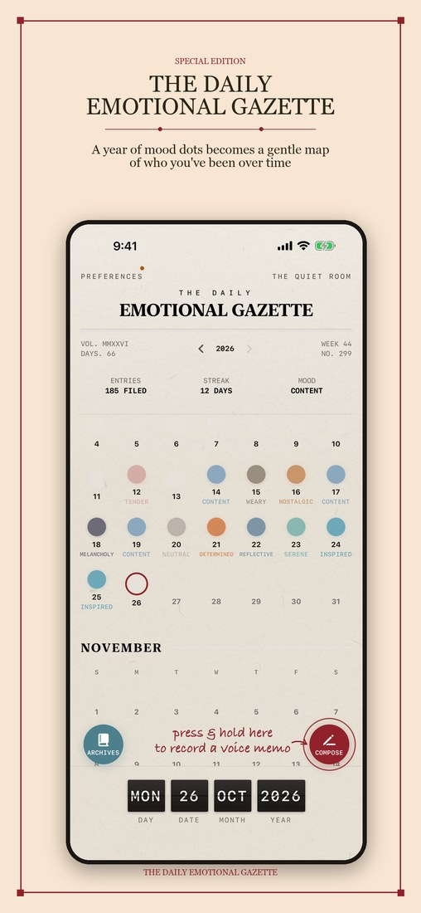
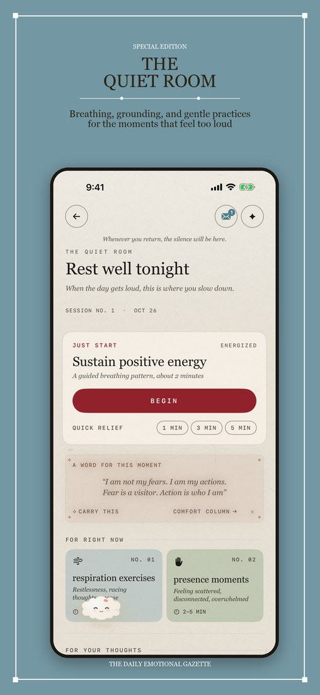
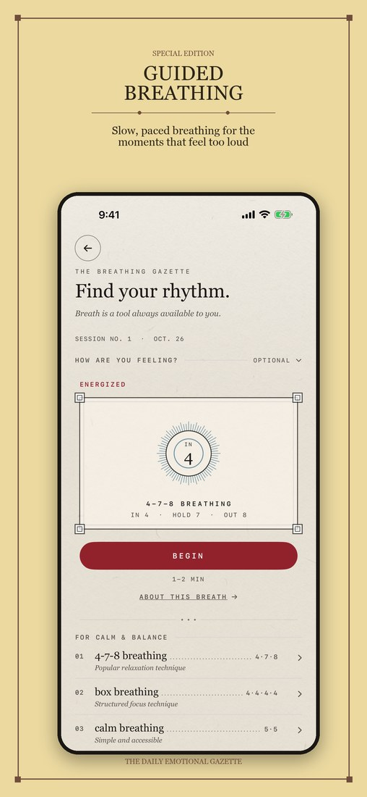
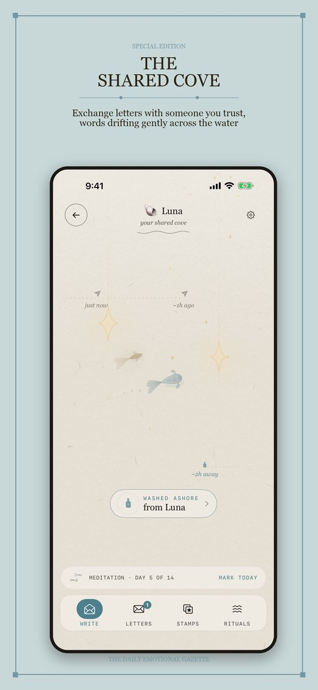

Set down a feeling.
A gentle mood grid makes a check-in possible in seconds. It is not another task to finish.
For the good days and the heavy ones, even if you have never kept a journal in your life. Set a mood in seconds. Breathe. Write a little, or not at all.

“You do not have to make sense of everything today.”
There is no correct way to arrive. Put down one feeling, write a few words, say it out loud, or simply take a breath. Skip a day and it will not scold you.
A gentle mood grid makes a check-in possible in seconds. It is not another task to finish.
A few words, a doodle, a photo, or your own voice. However today comes out is enough.
A year of small dots becomes a map of the days you have lived through.
Reverie Mood is quiet on purpose, so a few things are worth knowing up front. Everything below is optional. You can open the app, set one mood, and close it again.

The first time you open the app, a short welcome shares three promises about privacy, then asks one question: how are you, right now? Touch anywhere on the grid: left is unpleasant, right is pleasant, the top is high energy, the bottom is low energy. That is a complete entry, and it becomes today’s first dot. You can skip the welcome, or the question, at any time. On later days, tap Compose on the home screen. You can publish with just your mood.
The first time you open the full entry screen, a short Reporter’s Guide walks you through it. Tap START WRITING whenever you are ready.
Describe the feeling in your own words, attach a photo, record a voice memo, or add a doodle (doodles are part of Reverie+). Pick one, pick all, or pick none.
The fastest way to record is a shortcut: on the home screen, press and hold Compose until the ring around the button fills, which takes a little over half a second. A small recorder opens and starts at once. Speak, then tap Save. Once you have logged today, your cloud companion Puff takes that spot, and you can still add words, a photo or a voice memo by tapping today’s dot.
Every day you log becomes a colored dot. Tap any dot to open that day. Press and hold a dot to edit or delete it. Tap the year number at the top to open the month view, or swipe it left and right (or use the arrows beside it) to change year. Archives gathers what you wrote, recorded, photographed or drew, and lets you search it.
Tap The Quiet Room at the top right. Inside you will find guided breathing, grounding exercises, ambient sounds you tune like an old radio, affirmations, letters you can keep, release or burn, and the Shared Cove for one trusted person.
Tap Preferences at the top left. Daily Dispatch sets an optional gentle reminder. Reminders are off until you turn them on. Appearance changes the look. Widget Text turns the words from your entries on widgets on or off. Help Desk has a short guide to all of this, replays the welcome, and shows how to write to us. Your journal lives on your phone, and Backup Manager says plainly what is kept where. To keep a copy somewhere safe, make sure iCloud Mirror is on there, or make a file with DISPATCH A COPY.
| Quick voice memo | Press and hold Compose until the ring fills, speak, then tap Save. |
|---|---|
| Back to today | Tap the date strip along the bottom. |
| Travel to another date | Press and hold the date strip, then choose a day. |
| Month view | Tap the year at the top of the home screen. |
| Edit or delete a day | Press and hold that day’s dot. |
| Next or previous day | Inside an entry, when you are not typing, swipe left or right in the lower half of the screen. |
| Save and go back | Inside an entry, tap ARCHIVE at the top left, or, when you are not typing, swipe down from the lower half of the screen. |
| Home screen widgets | Touch and hold your Home Screen, tap the plus button, and search for Reverie Mood. There are widgets for your year, your week, today, Puff, soundscapes and the Cove, plus Lock Screen versions. |
Built for the moments you need a little less noise. Open it from the top of the home screen whenever you like.


The Shared Cove is a private space for two people to exchange letters in their own time. Invite one person with a QR code or a link. No sign-up, no profile, no feed.

Send a note now. Let it drift. Come back tomorrow or next week. The shore is still there.
The Cove uses iCloud to connect the two of you, so you both need to be signed in to iCloud.
A few years ago I walked away from a job, a city, and most of a life. I called it burnout. The truth is I got lost — no direction in my work, no direction in anything — and for a long stretch I stopped reaching for the world at all. Days blurred together. I’d become a lonely island.
The turn didn’t come from anyone pushing me. One day I just knew: this isn’t it. I started small — books, then a few words copied down, then moving my body again, then a quieter life somewhere far away. Writing was the thread that pulled me back. But I’m forgetful and easily overwhelmed, and most days even getting the notebook out was too much.
So I built the place I needed. Somewhere to set a mood down in seconds. To write a letter to myself, or to no one at all. To keep the words that got me through. To say things out loud again, on the days my own voice had gone rusty from disuse. To breathe when the night got loud. And to stay close to a couple of people without ever feeling pushed — reply now, tomorrow, or in a week; the door stays open.
Reverie Mood is that place. I made it for the version of me who needed somewhere to put what I was feeling. However today is going, I’m glad you’re here. Nothing to keep up. Nothing to prove. Just a soft place to land.
Antheia
Your entries live on your phone. There is no Reverie account to make and no one reading along. An iCloud Mirror keeps a private copy of your backups, photos, doodles and voice memos in your own iCloud Drive. It starts on for a new install, and you can switch it off at any time.
Read the full privacy policy.
Yes, it is free to download and to keep using. The mood grid, your year and month views, one photo per entry, a daily voice memo, letters to yourself, the Comfort Column, your first Shared Cove, and a starter set of breathing, grounding and sounds are all free. Reverie+ is an optional upgrade that adds doodles, more photos and voice memos, the full library of exercises and sounds, more coves, time capsules, PDF export and more ways to personalize. The App Store page shows current pricing and what is included.
On your iPhone. There is no Reverie account and no server holding your entries.
The iCloud Mirror is in Preferences, under Backup Manager. It copies your backups and your photos, doodles and voice memos into your own iCloud Drive, in a folder named Reverie Mood that also shows in the Files app. It starts on for a new install; a phone that had Reverie Mood before keeps the choice it had, so if you want a copy that survives a lost or replaced phone, check that it is on.
Before you switch, check that iCloud Mirror is on in the Backup Manager and let it finish. On the new phone, install Reverie Mood and choose “I have a backup to restore” on the welcome page, or open Preferences, then Backup Manager, choose the backup you want, and tap Restore. Restoring is a step you take yourself; it does not happen on its own. Photos, doodles and voice memos are kept out of ordinary iPhone backups, so the iCloud Mirror is how they travel to a new phone.
Not to write, look back, or use the calming tools; the sounds are stored in the app. The Shared Cove needs an internet connection and an iCloud account, because that is how the letters travel between you and the person you invited. The optional iCloud Mirror and buying Reverie+ need a connection too.
Daily reminders are off until you say yes. The app offers a quiet evening reminder once or twice, never right after a heavy mood, and stops for good if you choose No thanks. Open Preferences, then Daily Dispatch, to choose a time, or to change or stop it at any time. Once you allow notifications, Daily Dispatch also has Quiet Check-ins: if a week, two weeks or three weeks pass without you opening the app, a soft note may arrive. It is on by default, and you can switch it off there.
Yes. Open Preferences, then Help Desk. It has a short guide to everything in the app, replays the welcome, and lets you turn the little tips on or off.
Reverie Mood is made for iPhone and needs iOS 17.6 or later. An iPad can run it as an iPhone app, but it has no iPad layout of its own. The app is in English and Simplified Chinese.
No. It is a personal journal and a set of calming tools, not a replacement for professional care.
Please write to reveriearchive.studio@gmail.com. You will usually hear back within a couple of days. There is also a short support page.
Free to start, and it will never push you.
View on the App Store